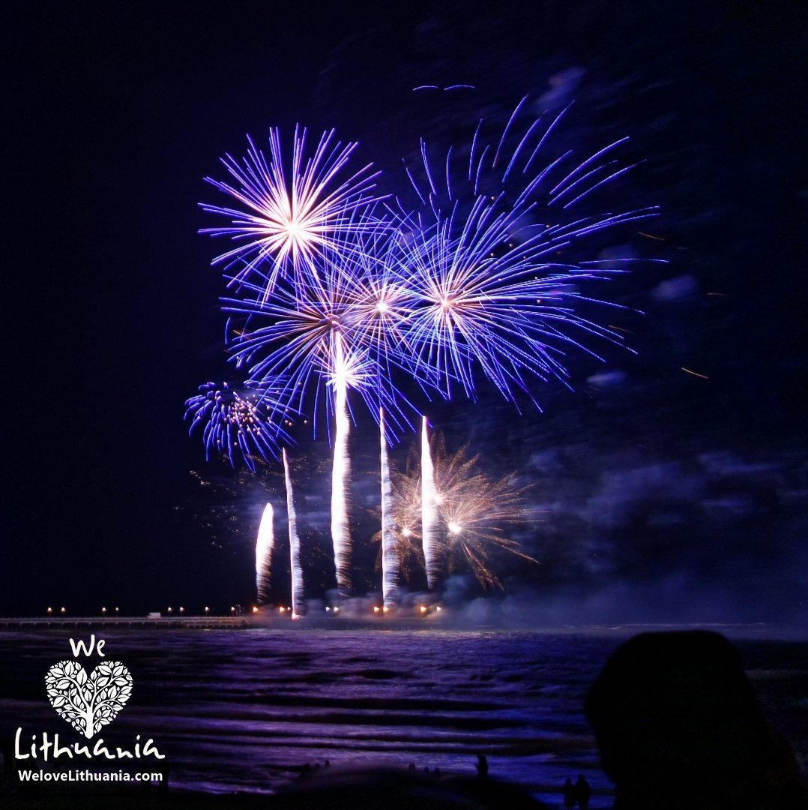

Welcome to fejerverkai
Pirotechnika - Pirotechnika-fejerverkai.lt
2020.10.29 11:02Prisijungti Susisiekite su mumis Susisiekite dabar: +37061571762 Krepšelis 0 Prekė Prekės (tuščia)
Prekių nėra
Turi būti nustatyta Pristatymas 0,00 € VisoPirkti
Prekė sėkmingai pridėta į krepšelį Kiekis Viso Krepšelyje yra 0 prekė (-ės). Krepšelyje yra 1 prekė. Prekės viso Viso pristatymas Turi būti nustatyta Viso Tęsti apsipirkimą Pereiti prie apmokėjimo Meniu Apie mus Fejerverkų istorija Pirotechnika Naudojimo instrukcijos Paslaugos Informacija > PirotechnikaKategorijos
Išskirtiniai ir dideli fejerverkai Baterijos iki 50 € Baterijos iki 25 € Baterijos iki 15 € Fejerverkai Naujų Metų sutikimui Fejerverkai saliutai gimtadieniui Fejerverkai saliutai vestuvėms Dangaus žibintai Bengališkos ugnelės Kita smulki pirotechnika Konfeti ir serpantinai Raketos Romos ugnys Ugnies fontanai
Civilinių pirotechnikos priemonių naudojimo ir pardavimo apribojimai
1. Draudžiama:
1) parduoti civilines pirotechnikos priemones (išskyrus 1 kategorijos fejerverkus) arčiau kaip 30 metrų nuo mokyklų;
2) naudoti civilines pirotechnikos priemones (išskyrus 1 kategorijos fejerverkus) arčiau kaip 30 metrų nuo mokyklų, gydymo ir reabilitacijos įstaigų, kulto, šarvojimo patalpų, jeigu tai nesuderinta su pastatų (statinių) ar patalpų valdytojais, taip pat kitose savivaldybės tarybos nustatytose vietose;
3) jeigu tai trikdo viešąją rimtį, naudoti civilines pirotechnikos priemones nuo 22.00 val. iki 8.00 val. (išskyrus švenčių dienas, taip pat per masinių pramogų renginius, kuriuos rengti savivaldybės taryba yra išdavusi leidimą), kitu teisės aktuose nustatytu ar savivaldybės tarybos nustatytu laiku;
4) naudoti civilines pirotechnikos priemones ne pagal paskirtį;
5) naudoti ir parduoti civilines pirotechnikos priemones, kurių garantijos (saugojimo) laikas yra pasibaigęs;
6) naudoti ir (ar) parduoti civilines pirotechnikos priemones asmenims, kurie neturi teisės jų įsigyti ir (ar) naudoti;
7) naudoti ir parduoti civilines pirotechnikos priemones asmenims, apsvaigusiems nuo alkoholio, narkotikų, psichotropinių ar kitų psichiką veikiančių medžiagų;
8) naudoti ir parduoti civilines pirotechnikos priemones, kurios yra akivaizdžiai mechaniškai ar kitaip pažeistos, deformuotos, ant kurių yra korozijos ar skysčių dėmių pėdsakų;
9) gaminti, parduoti ir naudoti pirotechnikos priemones, pažeidžiant šio įstatymo nustatytus reikalavimus;
10) naudoti civilines pirotechnikos priemones, kurios neatitinka esminių saugos reikalavimų ir nėra tinkamai paženklintos, taip pat šiomis priemonėmis prekiauti.
2. Civilinių pirotechnikos priemonių gamintojas, eksportuotojas, importuotojas, įvežantysis ar išvežantysis asmuo, prekiautojas, naudotojas civilines pirotechnikos priemones, kurių garantijos (saugojimo) laikas pasibaigęs ar kurias dėl mechaninių ar kitokių pažeidimų nesaugu naudoti, nedelsdamas privalo neatlygintinai perduoti sunaikinti Lietuvos Respublikos Vyriausybės nustatyta tvarka jos įgaliotai institucijai. Civilinių pirotechnikos priemonių sunaikinimo darbų išlaidas apmoka šių priemonių gamintojas, eksportuotojas, importuotojas, įvežantysis ar išvežantysis asmuo, prekiautojas, naudotojas.
3. Per 2 mėnesius po leidimo galiojimo laiko pasibaigimo arba licencijos ar leidimo galiojimo panaikinimo Lietuvos Respublikos ar valstybės narės nuolatinis gyventojas, Lietuvos Respublikoje įsteigtas juridinis asmuo, valstybėje narėje įsteigtas juridinis asmuo ar kita organizacija, ar jų filialas, įsteigtas Lietuvos Respublikoje ar valstybėje narėje, gali perleisti turimas civilines pirotechnikos priemones reikiamą licenciją ar leidimą turinčiam subjektui arba perkelti civilines pirotechnikos priemones į tinkamą sandėliuoti vietą.
Naujienlaiškiai
FacebookSekite mus
Kategorijos
Išskirtiniai ir dideli fejerverkai Baterijos iki 50 € Baterijos iki 25 € Baterijos iki 15 € Fejerverkai Naujų Metų sutikimui Fejerverkai saliutai gimtadieniui Fejerverkai saliutai vestuvėms Dangaus žibintai Bengališkos ugnelės Kita smulki pirotechnika Konfeti ir serpantinai Raketos Romos ugnys Ugnies fontanaiInformacija
Specialūs pasiūlymai Naujos prekės Perkamiausios Susisiekite su mumis Pristatymo sąlygos Naudojimo instrukcijos Pirotechnika Fejerverkų istorija Privatumo Politika Prekių pirkimo ir pristatymo sąlygos Apie mus Naudojimo taisyklės ir sąlygos Visos Teisės Saugomos Paslaugos Duomenų tvarkytojai Svetainės žemėlapis pirotechnika-fejerverkai.lt © 2020 | Elektroninės parduotuves nuoma : HostPartner.lt™ | Talpinama Profesionalus hostingasAš sutinku su Privatumo politika ir Duomenų apsaugos tvarkymu (skaityti)
Privatumo politika Aš nesutinku Aš sutinku Privatumo politika Aš nesutinku Aš sutinkuMano paskyra
Mano užsakymai Mano grąžinimai Mano suteiktos nuolaidos Mano adresai Mano asmeninė informacija Mano kuponaiParduotuvės informacija
Pirotechnika-fejerverkai.lt, Naugarduko g. 97 Vilnius Lithuania Susisiekite dabar: +37061571762 El. paštas: info@pirotechnika-fejerverkai.lt